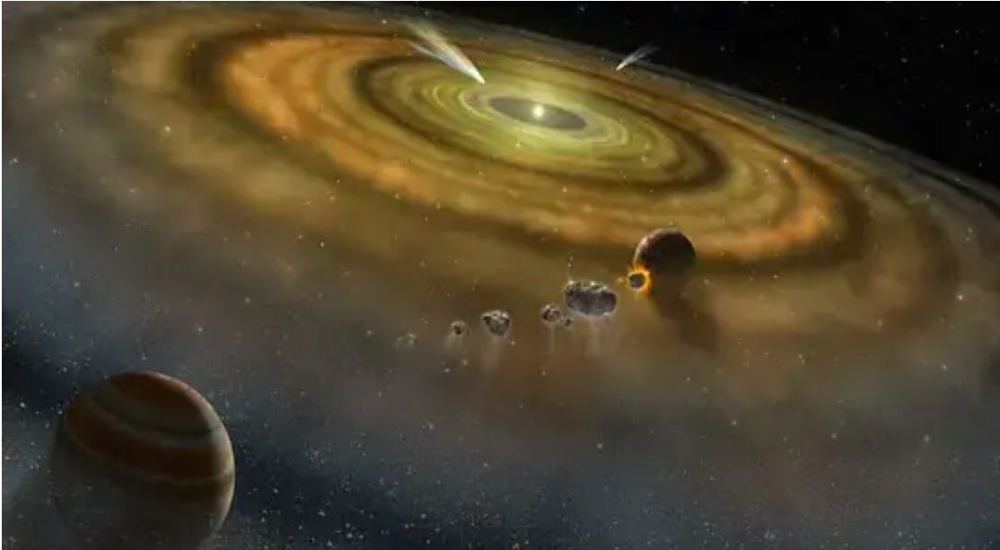
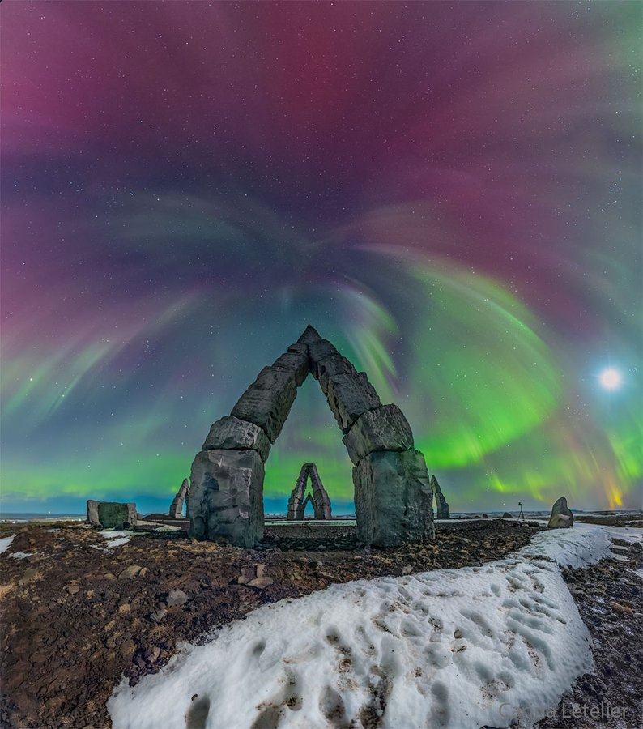

Orca "Lolita" será liberada tras más de 50 años
en cautiverio: volverá al Pacífico en avión de carga
General
La Orca "Lolita" volverá a
sus aguas de origen tras más de
50 años de cautiverio en el Miami Seaquarium.
Retornará en un avión de carga al Pacífico Norte,
sin embargo, no estará en mar abierto, sino que,
en una caleta, pues desde 1970 que no tiene contacto
con su especie. Hasta antes de su liberación,
"Lolita" era la segunda orca más vieja en cautiverio.
Jueves 30 marzo de 2023 | 14:23
Astrónomos chilenos descubren
2 nuevos planetas desarrollándose en un
sistema solar en formación
General

Tras estudiar el disco protoplanetario
HD163296, ubicado a más de 300 años luz de la Tierra,
un equipo de astrónomos chilenos descubrió 2 planetas
formándose, similares a Saturno y que traen nuevos
hallazgos sobre la formación de sistemas solares.
Según indica un comunicado del Centro de Astrofísica CATA,
los datos del estudio fueron obtenidos a partir del
radiotelescopio ALMA (Atacama Large Millimeter-Submillimeter
Array), ubicado en la región de Antofagasta,
Chile y estudiados por científicos de CATA y
la Pontificia Universidad Católica (PUC).
Martes 28 marzo de 2023 | 19:10
NASA reconoce a astrofotógrafa chilena
por imagen de auroras boreales en The Arctic Henge: ¿Qué es?
General

Cari Letelier captó las auroras boreales de finales
de febrero desde el Arctic Henge, ubicado en Islandia.
Esta semana, en la Astronomy Picture of the Day
(Imagen Astronómica del Día), elegida por la NASA,
destacó la astrofotógrafa chilena Cari Letelier,
tras tomar una impresionante postal de auroras boreales
en el Arctic Henge, Islandia.
Fue así como su foto figuró el día lunes 27 de marzo en el
portal de la agencia espacial, bajo el nombre
“Aurora sobre Arctic Henge”. Aunque fue tomada a fines de
febrero en Raufarhöfn, al norte de Islandia, donde se encuentra
la estructura.
Allí se pueden ver las auroras boreales de los últimos
días de febrero, donde también se identificaron algunas
estrellas como Polaris, por ejemplo, la más brillante de la
constelación de la Osa Menor.